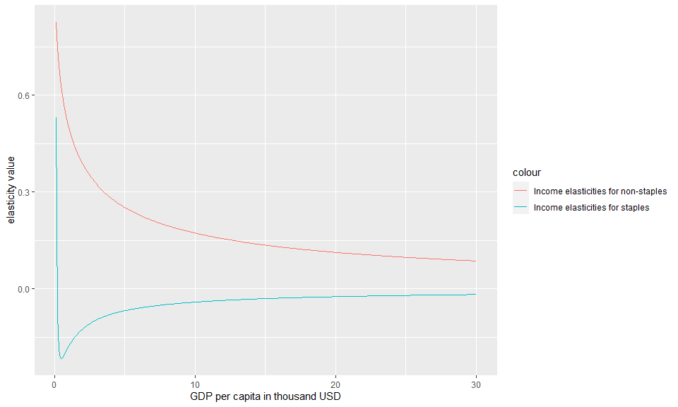
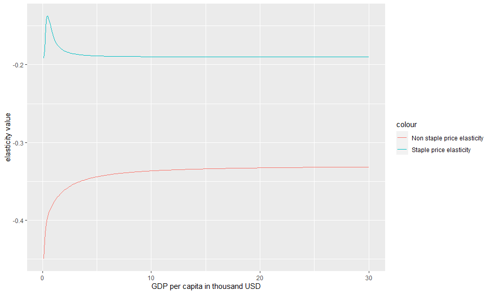
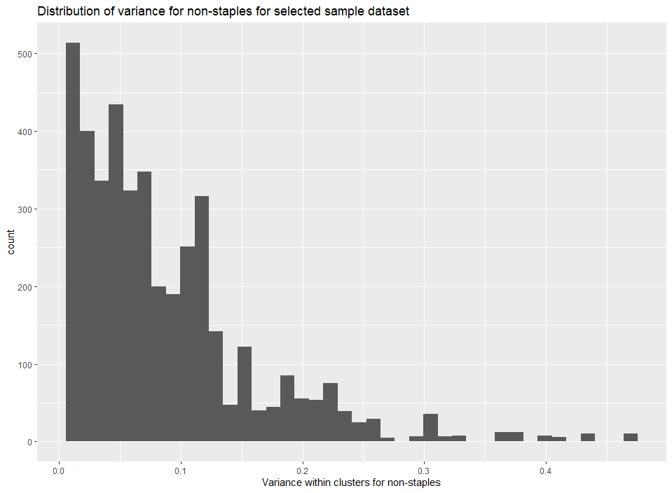
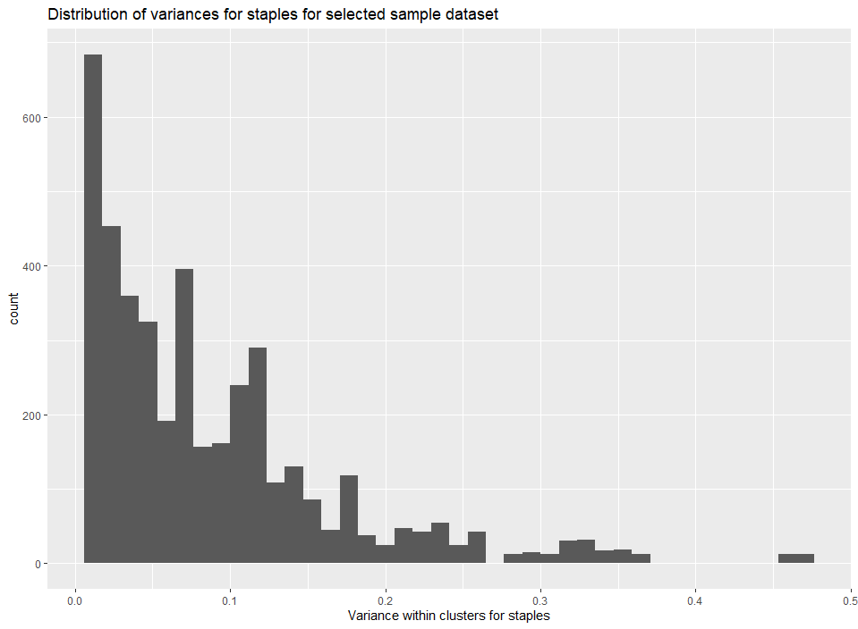
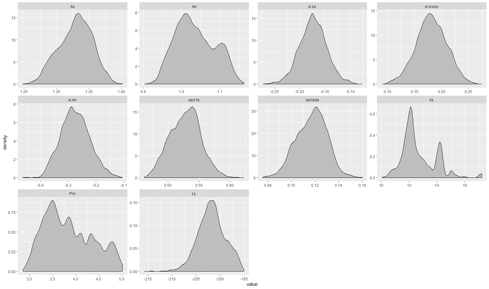

ambrosia: User Tutorial
Kanishka Narayan
2020-10-08
ambrosia_vignette.RmdPart 1: Calculating food demand, exploring demand side variables for a given set of parameters
This section explains how a user can set up the parameter structure for the ambrosia and explore the basic demand side variables.
Example 1.1: Calculate food demand
Demand in thousand calories can be calculated for different levels of income (Y) in thousand USD per capita for different prices of staples (Ps) and non-staples (Pn) both in $ per capita per day using the parameters calculated in example 1.1.
#Get a sample data set
Test_Data <- data.frame(Y=seq(0.1,30, by=0.1))
#Add sample values of Ps and Pn
Test_Data %>% mutate(Ps=0.1,Pn=0.2)->Test_Data
#Calculate food demand
Food_Demand <- food.dmnd(Test_Data$Ps,Test_Data$Pn,Test_Data$Y)Example 1.2: Visualize food demand
The demand along with the price and income elasticities calculated using the food.dmnd() function can be visualized easily.
#Add income and total demand to the data frame created in example 1.2 and create a plot.
Food_Demand$Total_Demand <- Food_Demand$Qs+Food_Demand$Qn
Food_Demand$Y <- seq(0.1,30, by=0.1)
#Create the plot
g<-ggplot()+
geom_line(data=Food_Demand,aes(x= Y,y= Qs,color= "Staple Demand"))+
geom_line(data=Food_Demand,aes(x= Y,y= Qn,color= "Non Staple Demand"))+
xlab("GDP per capita in thousand USD" )+
ylab("Thousand calories")
#Plot
plot(g) 
Example 1.4: Calculate income elasticities
The demand code iteratively solves for the budget shares using a Broyden solver with changing incomes and re-calculates income and price elasticities for changes in budget shares.The user can separately analyze the income elasticities by using two functions (one for staples and other for non-staples) from within the parameter structure generated above in example 1.1.
For income elasticities, the functions generated within the parameter structure stored within the object yfunc return the elasticities themselves for a given level of income. Setting the optional parameter within these functions to TRUE would return the income term itself (i.e. Y^ elas).
#Note that setting the second argument to "TRUE" in the functions below would return the Y term (Y^elas) as opposed to the elasticity.
#Get the parameter structure
tmp_param <- vec2param()
# Income elasticity for staples
Food_Demand$eta.s <- tmp_param$yfunc[[1]](Y=Food_Demand$Y,FALSE)
# Income elasticity for non-staples
Food_Demand$eta.n <- tmp_param$yfunc[[2]](Y=Food_Demand$Y,FALSE)
#Create data for the plot
g<-ggplot()+
geom_line(data=Food_Demand,aes(x=Y,y=eta.s,color="Income elasticities for staples"))+
geom_line(data=Food_Demand,aes(x=Y,y=eta.n,color="Income elasticities for non-staples"))+
xlab("GDP per capita in thousand USD" )+
ylab("elasticity value")
#Plot
plot(g)
Example 1.5: Calculate price elasticities
Similar to the income elasticities, the user can also calculate and analyze price elasticities. These elasticities. The function calc1eps() can be used to recalculate price elasticities by passing the following parameters:
different budget shares (alphas)
income elasticities (calculated in example 1.5)
A matrix of values for elasticities (this is a part of the parameter structure set up in example 1.1)
The price elasticities are calculated as an epsilion matrix with price elasticities for staples, non-staples and cross price elasticities.
#calc1eps returns a matrix of elasticities where the matrices are elasticities for staples(matrix 1), cross price #elasticities(matrix 2,3),non_staple elasticities(matrix 4))
#Get staple price and income elasticities
Food_Demand$staple_price_elasticity <- calc1eps(Food_Demand$alpha.s, Food_Demand$alpha.n , Food_Demand$eta.s , Food_Demand$eta.n, tmp_param$xi)[1:300]
Food_Demand$eta.n <- tmp_param$yfunc[[2]](Y=Food_Demand$Y,FALSE)
#Get non-staple price and income elasticities
Food_Demand$non_staple_price_elasticity <- calc1eps(Food_Demand$alpha.s,Food_Demand$alpha.n,Food_Demand$eta.s,Food_Demand$eta.n,tmp_param$xi)[901:1200]
Food_Demand$eta.n <- tmp_param$yfunc[[2]](Y=Food_Demand$Y,FALSE)
g<-ggplot()+
geom_line(data=Food_Demand,aes(x=Y,y=staple_price_elasticity,color="Staple price elasticity"))+
geom_line(data=Food_Demand,aes(x=Y,y=non_staple_price_elasticity,color="Non staple price elasticity"))+
xlab("GDP per capita in thousand USD" )+
ylab("elasticity value")
#Plot
plot(g)
Part 2: Calculating calibration parameters from raw data
Example 2.1: Get parameters
As mentioned in the documentation, ambrosia can generate estimates of food demand for staples and non-staples in thousand calories for given set of prices and income levels.
In addition to the price and income parameters, ambrosia requires 11 additional calibration parameters for the model. These parameters can be set using the function vec2param(). In order to understand the 11 parameters, their units, ranges and how they can be calculated, the user can call,
?vec2param()The user can set the parameters by passing a 11 parameter vector directly to vec2param() or by setting the 11 parameters individually. The user can also directly call vec2param() to get the default parameter structure with default values.
#Use a sample vector of parameters.
c(1.28,1.14,-0.19,0.21,-0.33,0.5,0.1,16,5.06,100,20) -> original_param_vector
#These are the names of the parameters
parameter_names <- c('A_s', 'A_n', 'xi_ss', 'xi_cross', 'xi_nn', 'nu1_n',
'lambda_s', 'k_s', 'Pm', 'psscl','pnscl')
#Create a dataframe of parameters
parameter_data <- data.frame(parameter_names,original_param_vector)
#Return a parameter structure
tmp_param <- vec2param(original_param_vector)
#Return a table of parameters
kable(parameter_data ,col.names = c("parameter_name","value"),format = "pandoc")This section now explains how a user can calculate model parameters from raw data. This way, ambrosia can be calibrated to custom data sets.
Example 2.2: Get a dataset for parameter fitting from a sample training dataset
One of the benefits of using ambrosia is that a user can estimate their own parameters with a custom data set using the log-likelihood maximization approach. To enable this, ambrosia is equipped with a function create_dataset_for_parameter_fit() that will help a user generate a dataset that is appropriate for parameter estimation. Note: The user can re-create the training data used to calculate the parameters for GCAM using the Process_Demand_Data.R under the scripts folder.
There are a few steps that the function will perform on a sample dataset.
It will ensure that the user’s dataset contains all columns required for parameter estimation
It will filter out anomalies and outliers using parameterized cutoff values selected by the user. This step is necessary since data on food consumption and prices are often incomplete which may lead to unrealistically high or low values of consumption or prices in the dataset.
After this, the function will create clusters of observations from the dataset based on income levels, and prices of staples and non-staples. This step is necessary because this being economic data, the observational error can only be calculated within different clusters. The code will also check for a user specified minimum number of clusters(If there are anomalies within the dataset, the clustering can be incorrect leading in a small number of clusters). The clustering is implemented using the Divisive Analysis Clustering Algorithm (DIANA)
Once the clustering is completed, the code will calculate the observational error which is the variance in food demand for staples (\({\sigma^{2}}Q_{s}\)) and non-staples \({\sigma^{2}}Q_{n}\) .Note that the user can chose a lower limit on the observational error calculated. The default value of the lower limit is 0.01
In addition to a data frame, the function will return a CSV file output called “Processed_Data_for_MC.csv” that is stored in the outputs folder that will be used for the parameter estimation. The example below illustrates how to use the function on a raw dataset.
The example below illustrates how to use the function on a sample dataset
#Load the training data
data("training_data")
#Create a sample dataset
training_data %>%
filter(year %in% c(2010:2015))-> sample_data
#Create a dataset for parameter fit
temp_data <- create_dataset_for_parameter_fit(data=sample_data,min_clusters = 20,min_price_pd = 20,min_cal_fd = 1700,outdir=tempdir()) Example 2.3: Analyze distribution of observational error for non-staples
The dataset returned by this function can now be used for parameter estimation. The user can also plot the observational errors for staples and non-staples to ensure there is a valid distribution and the data is not skewed.
The below plots show the observational error for pre-generated data.
#Load example processed_data
data("processed_data_example")
#Create a plot using example loaded above or data generated in example 2.1
g<-ggplot()+
geom_histogram(data=processed_data_example,aes(x=sig2Qn),bins = 40)+
xlab("Observational error within clusters for non-staples")+
ggtitle("Distribution of observational error for non-staples for selected sample dataset")
#Plot
plot(g) 
Example 2.4: Analyze distribution of observational error for staples
#Load example processed_data
data("processed_data_example")
#Create a plot using example loaded above or data generated in example 2.1
g<-ggplot()+
geom_histogram(data=processed_data_example,aes(x=sig2Qs),bins = 40)+
xlab("Observational error within clusters for staples")+
ggtitle("Distribution of observational error for staples for selected sample dataset")
#Plot
plot(g) 
Example 2.5: Calculate actual parameters
Finally, the user can complete the parameter estimation on the dataset returned by create_dataset_for_parameter_fit() with a call to the calculate_ambrosia_params() function. ambrosia builds on the Edmonds et al.(2017) approach by maximizing the log-likelihood score using the optim() function. Note that the user can also choose to use a different method (for example, the original MCMC) to maximize the log-likelihood function by first setting up the log likelihood function using the mc.setup() function.
The following steps are involved in the parameter estimation function,
First a log-likelihood function is set up with the data returned by the function above. This function calculates a log likelihood score using a weighted least squares approach (where the population of the region is the weight)
Now, the value returned by this function will be maximized using
optim(). The user can provide a seed of initial parameters to begin the optimization process (the lowest possible seed would be the lowest values of all 11 parameters). The default seed is set to the original parameters from Edmonds et al. The user can now specify the optimization method to be used. The default is set to the “BFGS” method, but the user can also run the optimization using methods such as “Neldor-Mead” etc.The function will now return a vector of parameters that can be used to derive estimates of food demand (Similar to Example 1 above). The function also prints out the maximized value of the log-likelihood function, so that the user can verify the efficiency and effectiveness of the parameter estimation.
Warning: Calculating parameters takes a long time (around 25 minutes)
#load sample data
data("processed_data_example")
#write it to a temporary csv
write.csv(processed_data_example,"Processed_Data_for_MC.csv")
#calculate new parameters using this saved dataset
new_parameters <- calculate_ambrosia_params(datadir="Processed_Data_for_MC.csv",
optim_method = "BFGS",
original_param_vector= c(1.28,1.14,-0.19,0.21,-0.33,0.5,0.1,16,5.06,100,20),
,outdir = tempdir())Example 2.6: Set up a log likelihood function based on observational data
#The log likelihood function set up below can be used to fit parameters either using the maximization function or any #other approach like a Markov Chain Monte Carlo
#load sample data
data("processed_data_example")
#write it to a temporary csv
write.csv(processed_data_example,"Processed_Data_for_MC.csv")
#Now, set up a log likelihood function using the saved data. Note that the trace_param parameter is used #to trace parameter values during a fitting process like a MCMC calculation. See Part 4 below for more #details.
func_MC <- mc.setup("Processed_Data_for_MC.csv", trace_param= FALSE)Example 2.7: Calculate the log likelihood score based on the parameters (vector) calculated in Example 2.4 and the log likelihood function calculated in Example 2.5
if(!(exists("new_parameters"))){
print("New parameters not calculated as shown in example 2.4. Loading pre-saved parameters")
new_parameters <- c(1.28,1.14,-0.19,0.21,-0.33,0.5,0.1,16,5.06,100,20)
}
#calculate the likelihood score using the function calculated in example 2.5
likelihood_score <- func_MC(c(new_parameters))Part 3: Running the interactive version of the model
The user can also launch an interactive version of ambrosia to visually understand how the parameters are used to calculate the outputs and also to test new parameter values. Note that using the interactive version requires the shiny library to be installed.
Example 3.1: Run the interactive version of the model
runapp()Part 4: Exploring data from a parameter fitting process (MCMC or maximization or any other process)
Now if a user calculated new parameters (either using calculate_ambrosia_params() or by setting up the log likelihood function using mc.setup() and maximizing the log likelihood using another method), ambrosia also allows the user to explore the results of a parameter fit.
Example 4.1: Generating parameter data
Parameter data can be generated in two ways,
- If
calculate_ambrosia_params()is used to calculate parameter values, the user would have to set thetrace_paramto TRUE to generate the data (.dat) file
new_parameters <- calculate_ambrosia_params(datadir="Processed_Data_for_MC.csv",
optim_method = "BFGS",
original_param_vector= c(1.28,1.14,-0.19,0.21,-0.33,0.5,0.1,16,5.06,100,20),
,outdir = tempdir(),
trace_param = TRUE)- If the log-likelihood function was set up using
mc.setup()directly and this was maximized using some other method, then the sametrace_paramparameter needs to be set to TRUE before the fitting process to ensure the .dat file is generated.
likelihood_function <- mc.setup("Processed_Data_for_MC.csv", trace_param = TRUE) Using the above code, the user can generate a .dat file which will track parameter samples during the fitting process along with the likelihood value itself.
The user can now read in the file, assign parameter names and generate density plots for the same.
Example 4.2: Read in mc.data and create density plots
#Load example data
data("mc_data_example")
#write it to a temporary file as an example
write.table(mc_data_example,"mc_data_example.dat")
#Read the table
#nparam is set to 11 since we are using the 11
mc_example <- read.mc.data("mc_data_example.dat",varnames = namemc(nparam = 11))
#Create the density plot
mcparam.density(mc_example)
Example 4.3: Re-create maximum probability density
The user can also extract the parameters that yield the highest log likehood score from amongst the samples.
#Load example data
data("mc_data_example")
#write it to a temporary file as an example
write.table(mc_data_example,"mc_data_example.dat")
#Read the table
mc_example <- read.mc.data("mc_data_example.dat",varnames = namemc(nparam = 11))
#The function below will return a vector of parameters which yield the highest log likelihood score
mcparam.ML(mc_example) -> ml_parameters
#Set up the log-likelihood function
func_MC <- mc.setup("Processed_Data_for_MC.csv")
#Now calculate the probability density.The value should be -962
probability_density <- func_MC(c(ml_parameters))